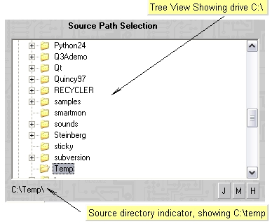
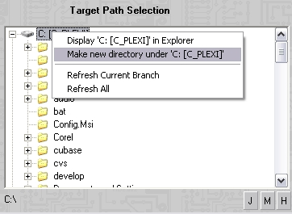

One may select the source directory on the left hand tree
view. For training purposes, we select the temporary directory on drive
C:. [c:\temp]. The screen should look line this (partial view):

To select the
destination directory for our test, we create a new directory under
c:\temp2. Right click with your mouse on drive C: in the right side
tree view. Your screen shold look like this:
n
Create a new directory called c:\temp2. Your screen
should look something like this:
Press the "Backup->" button.
This concludes the basic usage example.
4.2. TimeDim Sessions.
TimeDim can Save/load sessions from file. load
sessions from file.
4.3. Eazy Backup to Jump Drive